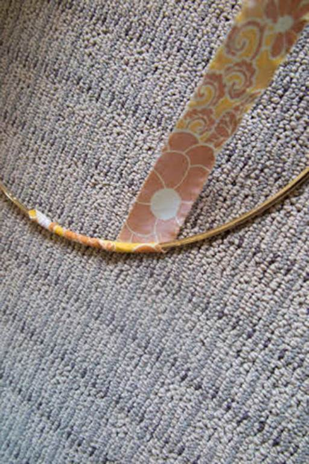
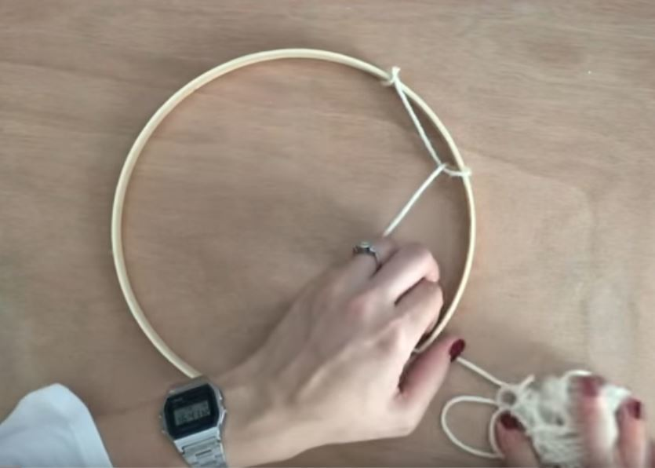
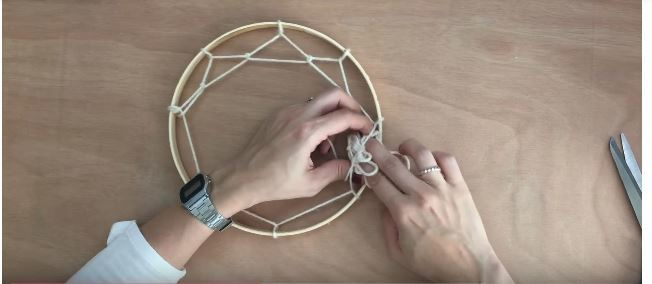
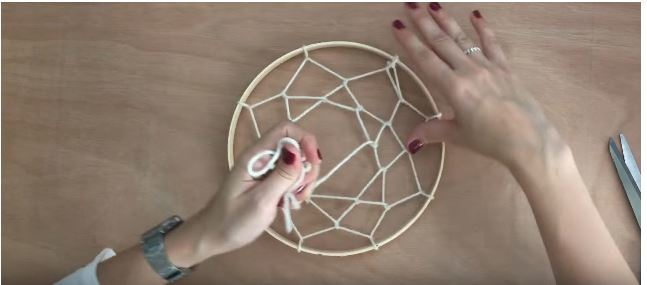
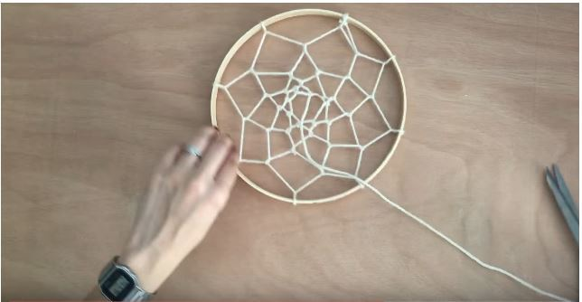
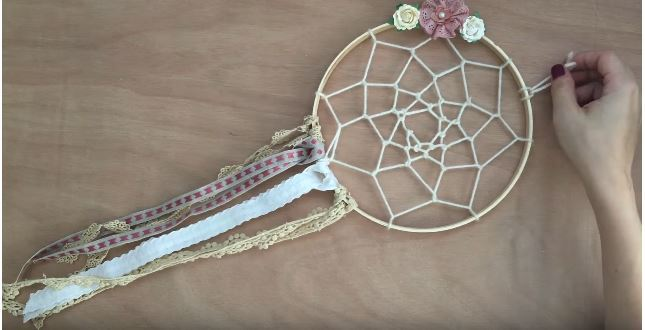

Materiales
- Un aro, puede ser cualquier estructura circular como el asa de un bolso, una pulseras viejas o simplemente con un trozo de alambre crear un círculo. Ten en cuenta que si el aro es pequeño, el atrapasueños también será pequeño.
- Elementos para decorar (Plumas, cintas, trenzas, tiras de tela, cuerda, trapillo, lana, abalorios, etc.)
- Tijera
- Pistola de pegamento
PASO 1 – FORRAR EL ARO
Tenemos que tener claro que material vamos a utilizar para forrar el aro y así nuestro atrapasueños quede más bonito. Tanto si hemos elegido cuerda, lana o cinta, la forma de proceder será la misma. Aplicamos una línea de pegamento caliente sobre el aro.
Ahora tomamos la lana o el cordón y lo enrollamos alrededor del aro, la línea de pegamento mantendrá en su sitio el cordón, para que no se mueve. Asegúrate de que no queda nada visible del aro, que todo está tapado. Cuando ya tengamos todo el aro forrado, sujetamos el extremo con una pinza durante 5 minutos, hasta que se seque.
PASO 2 – DEJAR SECAR
Como medida de precaución y para asegurarnos que el proyecto sale bien, dejaremos durante 15 ó 20 minutos, para que el pegamento haga su función.
PASO 3 – PRIMERA VUELTA
Ahora nos toca tejer la red que va a atrapar las pesadillas y los malos sueños, por lo que es la parte más delicada. Lo primero que haremos es cortar un trozo de lana (si es el material elegido para tejer la red), en nuestro caso y como el aro no es muy grande, hemos cortado unos 180 cm.
Cogemos la lana y hacemos un nudo en la parte superior del aro. Ahora tensa la cuerda, pasa la cuerda por encima del aro y después entre el cordón de lana y el aro, deja una distancia aproximada de 5 cm., este paso lo repetiremos las veces que sean necesarias hasta llegar al nudo inicial.
PASO 4 – SEGUNDA VUELTA Y SIGUIENTES
Ahora nos toca tejer la segunda vuelta, en esta la forma de proceder será la misma. La empezamos a partir del nudo inicial, donde empezó la primera vuelta, se teje de la misma manera pero en lugar de pasarla por encima del aro, haremos pasar la lana por el medio de la vuelta anterior, como podemos observar en la imagen anterior.
El resto de vueltas se realizarán de la misma manera, pasando la lana sobre la cadena de la vuelta anterior. Cuando lleguemos al centro y ya no podamos tejer más, realizaremos un nudo y cortaremos el resto de lana sobrante
PASO 5 – ADORNOS PARA EL SUEÑO
Ya se ha terminado la parte del atrapasueños encargada de atrapar las pesadillas y los malos pensamientos, ahora tenemos
que realizar la parte contraria, la parte que se encarga de atraer hacia nosotros los pensamientos bonitos y los sueños
agradables.
Para ello Podemos utilizar plumas, como los originales o bien, cintas, lazos, trapillo, abalorios, etc. Para comenzar,
simplemente cortaremos cintas al tamaño que más nos guste. Estas cintas pueden ser del mismo color o variado, del mismo
material o con texturas diferentes.
Irán situadas en la parte inferior del aro, para ello sólo tenemos que doblar la cinta por la mitad, para hacer pasar los extremos a través del lazo doblado, como podemos ver en la imagen anterior
PASO 6 – DECORACIÓN PARA EL ATRAPASUEÑOS
Ahora entra la imaginación en funcionamiento, si queremos adornarlo con distintos abalorios o poner algún tipo de adorno como flores, plumas, etc. Podemos insertar abalorios en distintas tiras de lana y luego colgarlos del aro con un nudo. Para finalizar, cogemos un trozo de lana, lo doblamos por la mitad y hacemos un nudo en los extremos, para después pasarlo por el aro y así conseguir el lazo necesario para colgarlo de la pared o techo.